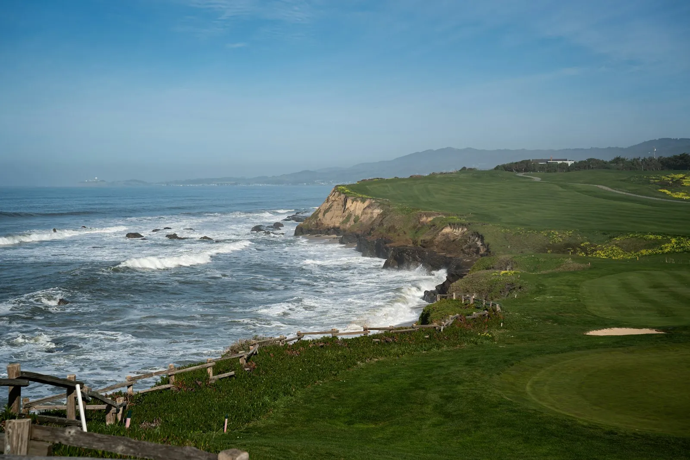
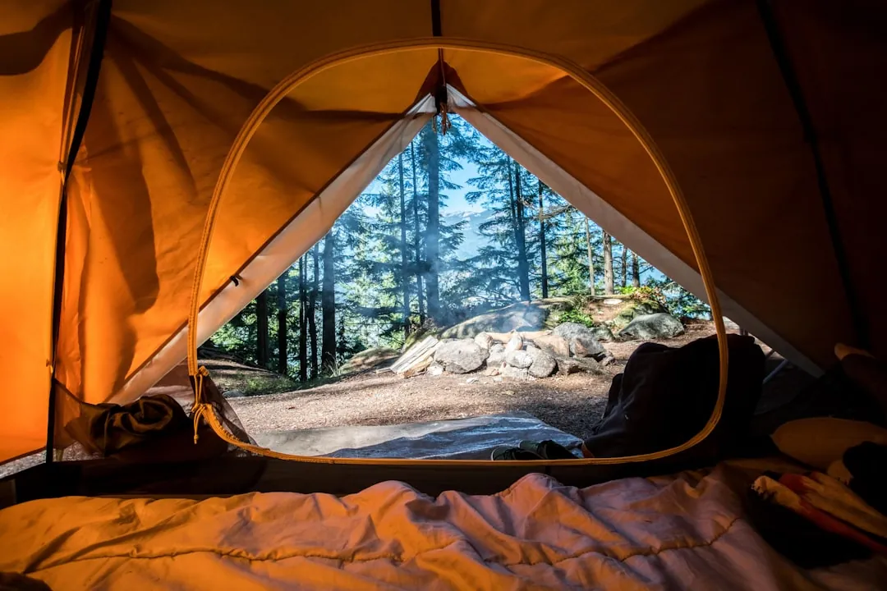

Top 7 California golf trip mistakes
· By GoldenPath Guide Editorial Team
California golf trips go wrong in the same seven ways, year after year. Golfers cover too much ground, book the wrong season for their region, and lose mornings to booking windows they never read. Each mistake below comes with its fix, because every one of them is avoidable with ten minutes of planning. Read this list before booking anything and the trip mostly plans itself.
None of these mistakes reflect bad golf. They reflect skipped homework. The fixes are small, specific, and proven across thousands of visitor rounds.
1. Trying to play the whole state in one trip
San Diego to Monterey measures roughly 400 miles and 6 to 7 hours of driving, and Los Angeles traffic adds unpredictable hours on top. Golfers who schedule Pebble Beach, Torrey Pines, and PGA West in five days spend more time on freeways than fairways. Each inter-region transfer burns a full golf day once packing, checkout, and traffic combine.
Fix it by picking one base per trip and playing it deeply. Monterey plus Santa Cruz, San Diego alone, or Palm Springs alone each fill a week without a single exhausting drive. The other regions wait patiently for the next trip, and repeat visitors consistently rate single-base trips higher.
2. Booking flights before the anchor tee time
The anchor round decides the trip: Pebble Beach, Torrey Pines South on a weekend, or a desert prime morning in February. Golfers who book flights first discover the anchor date sold out, then bend the whole trip around leftover slots. Weekend mornings at famous courses sell out within minutes to days of each booking window.
Fix it by reversing the order. Reserve the anchor tee time first, then book flights into the nearest airport and lodging within 30 minutes of the course. Our tee-time guide walks through each booking system window by window.
3. Playing the wrong tees out of pride
Torrey Pines South stretches past 7,600 yards from the tips, the Stadium Course carries forced carries on nearly every hole, and Spyglass Hill punishes crooked driving from any tee. Visitors who play the back tees for the story shoot big numbers slowly and hold up the course. American golfers move up a box without a second thought; the stigma exists mostly in visitors heads.
Fix it by choosing tees from your home-course yardage, not the scorecard maximum. If you play 6,400 yards at home, play the nearest tee to 6,400 yards in California. The ocean views, the architecture, and the company stay identical one box forward, and the round finishes an hour sooner.
4. Falling into the winter twilight trap
Twilight rates tempt golfers with real discounts, but winter sunsets in San Diego fall near 5 p.m. and in Monterey only slightly later. A 2 p.m. winter start ends in darkness around the 14th or 15th hole. Golfers who booked twilight to save money pay full frustration instead, walking off unfinished as the light dies.
Fix it by checking the sunset time for your exact date before booking anything after noon in winter. Treat winter twilight as a 12-hole bonus round at best, and book twilight only from April through September when 7 to 8 p.m. sunsets leave real margin. Morning rounds cost more and deliver all 18 holes.
5. Ignoring the marine layer and desert heat
Coastal mornings run cold and gray through the marine layer, which burns off around 10 a.m. most days, while desert afternoons run dangerously hot from June through September. Golfers who dress for the forecast high freeze through six holes in Monterey, and golfers who walk at 2 p.m. in Palm Springs in August risk genuine heat illness. Both climates punish the unprepared daily.

Fix it with layers on the coast and sunrise starts in the desert. Pack a wind layer for every coastal round regardless of month, and schedule desert summer golf at first light with the round done by 11 a.m. Our seasonal cost guide maps each month region by region.
6. Showing up in jeans or without small bills
Resort and upscale daily-fee courses turn away denim at the door, and the refusal happens in front of the group with no refund of the morning. Separately, bag-drop staff, beverage carts, and locker rooms all expect small cash tips, and card readers do not reach every corner of a golf facility. Both failures trace to packing, not money.
Fix it by packing collared shirts and proper golf bottoms for every round, and by carrying 20 to 30 dollars in small bills from day one. Confirm the dress code on the course page the night before, since definitions of acceptable wear vary slightly by venue. Two minutes of checking beats a ruined morning.
7. Skipping the rest day and the backup plan
Five straight days of walking hilly courses exhausts most golfers over 50, and one delayed bag or rained-out round cascades through a schedule with no slack. Groups with zero flex days play hurt, play tired, or skip paid rounds entirely. The trip ends with everyone agreeing it needed one more day.
Fix it by building one full rest day into every five golf days and one backup round into the schedule. Hold a cancellable second-tier tee time for the same morning as the anchor, keep one morning open for replays, and recheck confirmations one week out. Slack is not wasted time; it is the highest-value planning on the trip.
A pre-booking checklist against all seven
- One base per trip, with no inter-region drives on golf days.
- Anchor tee time booked before flights and lodging.
- Forward tees selected from home-yardage honesty.
- Sunset times checked for every round starting after noon.
- Layers packed for the coast, sunrise starts for desert summer.
- Dress code confirmed and small bills carried.
- One rest day and one backup round in every schedule.
Seven mistakes, seven fixes, one good trip. The courses do the rest.
Golf Season & Weather
Packing
Torrey Pines: South & North
Pebble Beach Golf Links